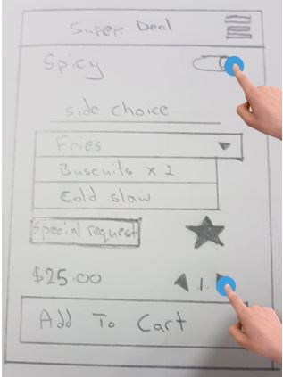
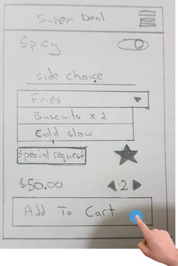
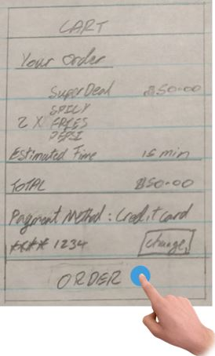

Subtask 1: Choose a restaurant on campus.
A) He chooses the restaurant KFC by touching the section of the screen with “KFC”.

Subtask 2: Select your meal from the restaurant menu.
A) He chooses the KFC Combo “super deal” by touching the order button on the screen.

Subtask 3: Customize the meal that is chosen.
A) He chooses Spicy as the style of chicken by touching the slider.
B) Change the quantity of orders by touching the right add button.

Subtask 4: Add the order to the cart.
A) He adds the order to his cart by touching the Add to cart button.

Subtask 5: Place the order.
A) He places the order by touching the order button, with the option to select payment method.
B) There is also an option to cancel the order incase any mistakes were made during the order process or incase he changes his mind afterwards.
C) He sees the estimated time and waits for 15 mins then goes to collect his order the KFC food outlet in UWI.